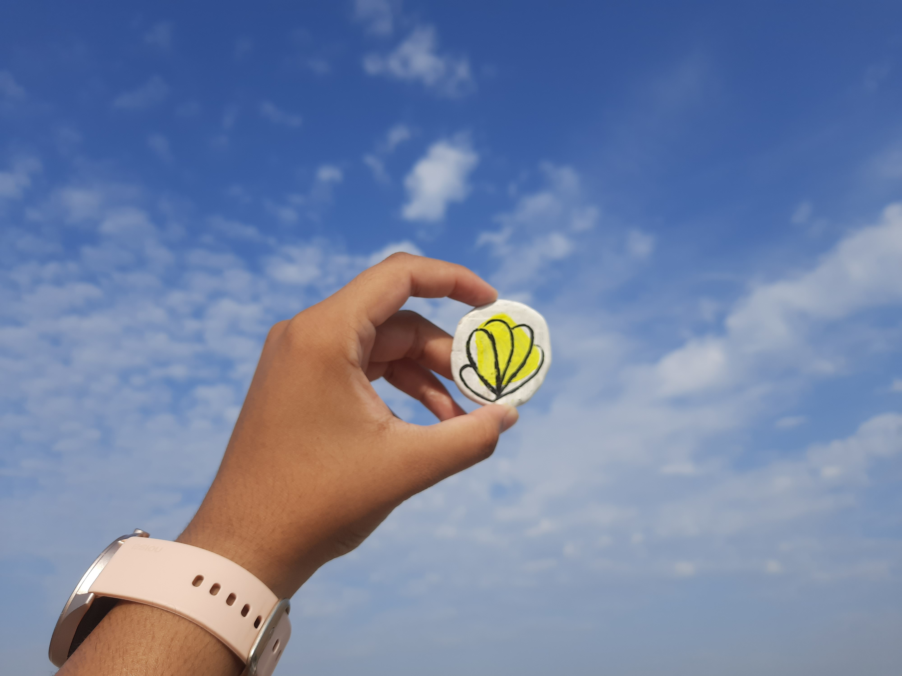
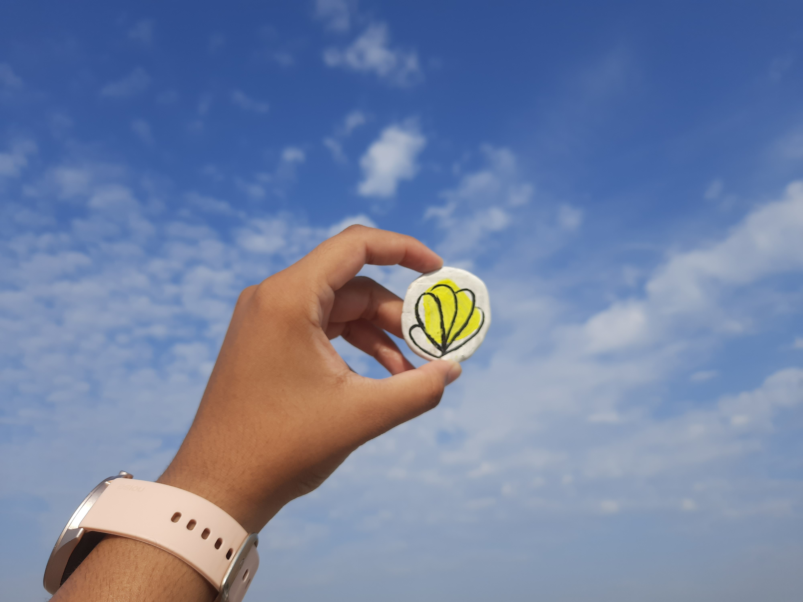

Lippan Art of Gujarat.
Lippan art is one of the traditional arts of Gujarat, made with finest clay and mirrors. Look at the bright colors, catching our eyes, those mirrors shinning in the direction of sun; giving us a way to blink and smile while forces us to touch them with all open hearts.


 
